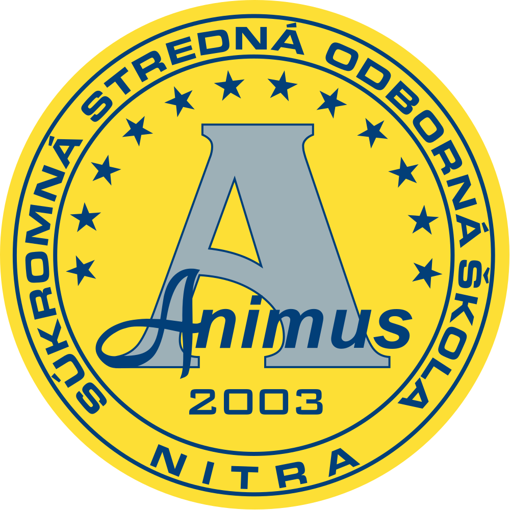
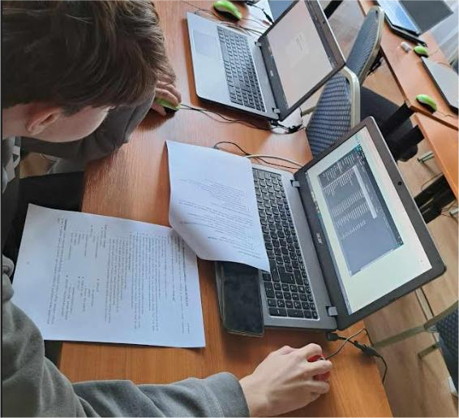

Študijný odbor Informačné Systémy a Služby (ISS) ponúka žiakom komplexné vzdelanie v oblasti informačných technológií. Naučíš sa spravovať databázy, programovať aplikácie a porozumieť základom kybernetickej bezpečnosti.
Animus Súkromná Stredná Odborná Škola ANIMUS
ISS
Informačné Systémy a Služby

MRCR
Marketing a Cestovný Ruch
Odbor Marketing a Cestovný Ruch (MRCR) sa zameriava na prípravu odborníkov v oblasti marketingu a cestovného ruchu. Počas štúdia získaš znalosti v marketingových stratégiách, manažmente turizmu a komunikácii s verejnosťou.

SSOŠ ANIMUS
Súkromná Stredná Odborná Škola
SSOŠ ANIMUS je moderná stredná škola poskytujúca kvalitné vzdelanie s dôrazom na praktické zručnosti. Škola sa zameriava na rozvoj odborných vedomostí v oblasti informačných technológií, marketingu a cestovného ruchu.